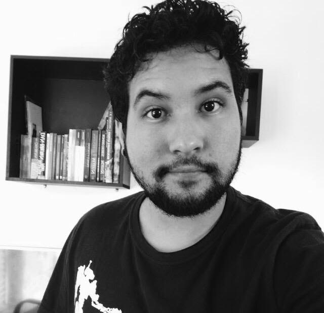
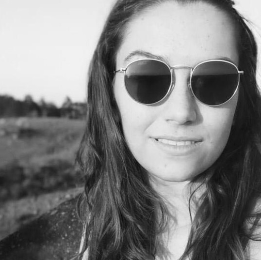
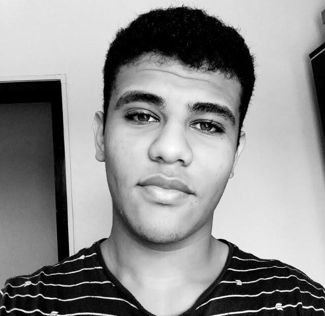

<div class="d-flex background">
    <div class="center">
      <h3>NOSSO TIME:</h3>
      <table align="center">
          <tr>
            <div></div><td></td><div></div>
            <div></div><td></td><div></div>
            <div></div><td></td><div></div>
            <div></div><td></td><div></div>
            <div></div><td></td><div></div>
          </tr>
      </table>
      <br>
       <h3>Nossa história e propósito</h3>
       <p>Nós somos um grupo de estudantes da PUC-Campinas que decidimos desenvolver este sistema para auxiliar todas as pessoas que precisam destas informações de transparência do Governo do Estado de São Paulo refrente a criminologia entre os anos de 2011 a 2020 para que seja de maior facilidade de interpretação, comparação e visualização dos dados. Escolhemos este tema de Homicídio Doloso para que fique claro para todas as pessoas que conseguirem analisar estes dados, o quanto vale a vida nos dias de hoje. A cada dia que levantamos de nossas camas diversas vidas acabam virando números em uma mera pesquisa. Devemos nos atentar a enxergar isso com outros olhos, pois a cada dia, isso se torna algo mais comum, quando não deveria ser.
           <br>
           Seja bem vinda e bem vindo ao nosso site, esperamos que goste do que preparamos para você, e esperamos que você saia daqui com uma outra visão de quanto vale uma vida.</p>
    </div>
</div>  